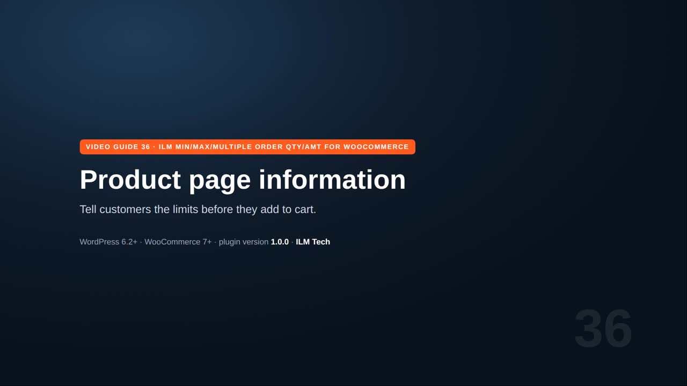
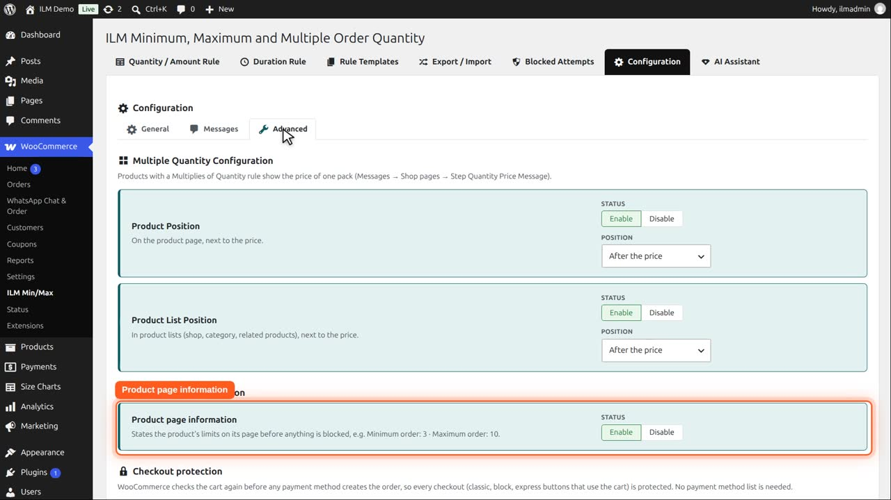
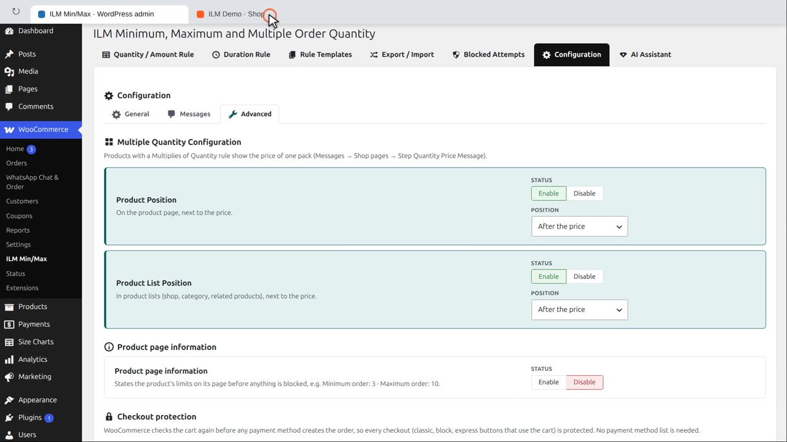
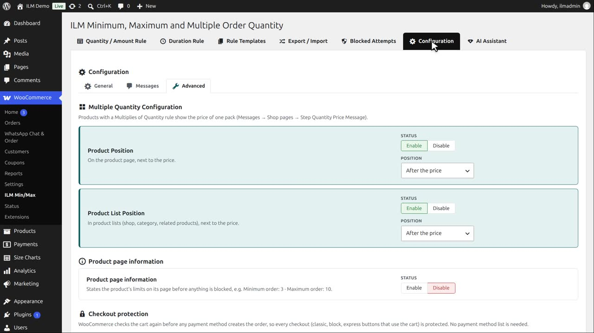

Pro add-on. This feature needs the Pro add-on. See Free and Pro.
With Product page information switched on, the product page states the limits before the shopper tries anything:
Above the add to cart button, the Mountain fox cushion tells the customer: minimum order two, maximum order eight.

This is set on Configuration, Advanced. A rule that adds up a whole category, brand, tag or role is not shown on each product.

Disable it,

and the line is gone. The limits still apply, the customer just is not told in advance.

Enable it again. The wording of each line is on the Messages tab, under Shop pages: minimum, maximum, allowed quantities, and limit used up.